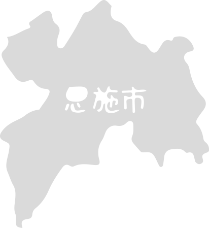
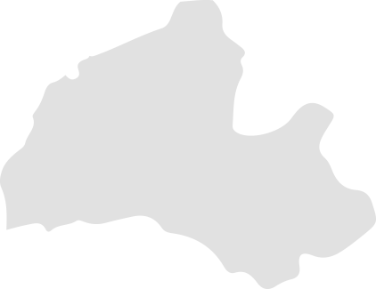
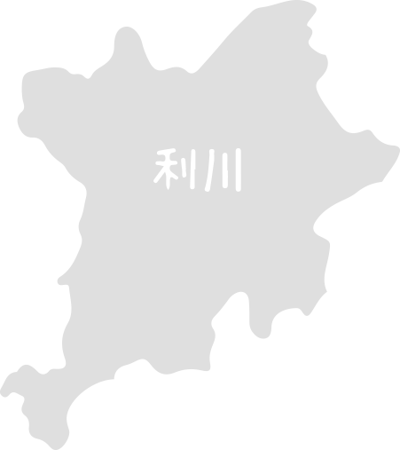

恩施 ，一个遗落在深山中的秘境，它有大清江的清秀柔美，也有大峡谷的气势磅礴，只有深入腹地，才能感知峡谷深山的魅力。 恩施 ，一个少数民族的聚集地，过着属于他们多姿多彩的生活，只有大口喝上一晚“摔碗酒”，跳上一段“摆手舞，才能感受土家族的热情洋溢。
旺季:七星寨105人民币/云龙地缝50人民币；
淡季:七星寨80人民币/云龙地缝50人民币；景区设施:索道上行105人民币/景区换乘车车票(往返)30人民币/七星寨户外手 扶电梯(单程)30人民币/云龙地缝垂直观光电梯(单程)30人民币 (1月1日-12月31日 周一-周日)
08:00-16:00(旺季开放时间)
(3月1日-11月30日 周一-周日)
08:30-15:00(淡季开放时间)
(12月01日-次年02月28日 周一-周日)
(1月1日-12月31日 周一-周日)
08:30-16:30(夏季),09:00-16:00(冬季) (1月1日-12月31日 周一-周日)
150元
08:00-18:00 (1月1日-12月31日 周一-周日)
普通票:150人民币 (1月1日-12月31日 周一-周日)
半票:身高1米2以上的儿童、60—69周岁老年人凭本人身份证、学生证（全日制本科以下在校学生）
08:00-17:30(夏季),08:30-17:30(冬季) (1月1日-12月31日 周一-周日)
普通票:150人民币 (1月1日-12月31日 周一-周日)
半票:身高1米2以上的儿童、60—69周岁老年人凭本人身份证、学生证（全日制本科以下在校学生）
普通票:50人民币 (1月1日-12月31日 周一-周日)
免票:1.2米以下儿童、70岁以上老人、残疾人、现役军人凭有效证件
恩施是巴文化的发祥地，是世界优秀民歌《龙船调》的故乡，是鄂西生态文化旅游圈的核心区。这里有200多万年前“建始直立人”留下的世界最早的“古人类文化”，有与楚渝文化交相辉映的“巴文化”；有精美绝伦的土家织锦西兰卡普；有中国南方杆栏式建筑经典土家吊脚楼；有“二战”时期恩施作为湖北省临时省会所在地和世界反法西斯东方战场第六战区指挥中心形成的“抗战文化”；有中国工农红军在这里开展武装斗争长达八年之久、建立湘鄂西革命根据地积淀的“红色文化”；有亚洲第一洞“腾龙洞”；有可与美国科罗拉多大峡谷媲美的“恩施大峡谷”；有全国罕见、一线串珠的国家级自然保护区星斗山、七姊妹山和国家森林公园坪坝营、土司城、国家4A级景区黄金洞、麻柳溪羌寨等。这些奇观和多彩的民族文化、良好的自然生态、宜人的气候条件，使恩施州成为名符其实的“旅游胜地”，与张家界、长江三峡构成了中国黄金旅游线上的“金三角”。恩施州是一个物产富饶的地方。森林覆盖率近70%，享有“鄂西林海”、“华中药库”、“烟草王国”等美誉。全州水电资源理论蕴藏量达600万千瓦，可开发量近500万千瓦，已开发和正在开发的400多万千瓦，是华中地区重要的清洁能源基地。鄂西大铁矿是全国四大铁矿之一，已探明储量13亿吨，预测储量达40亿吨，经济价值达1000亿美元。天然气已探明储量1500亿立方米，预测资源量1.5万亿立方米。恩施州拥有世界上最大的独立硒矿床，有“世界硒都”之称。